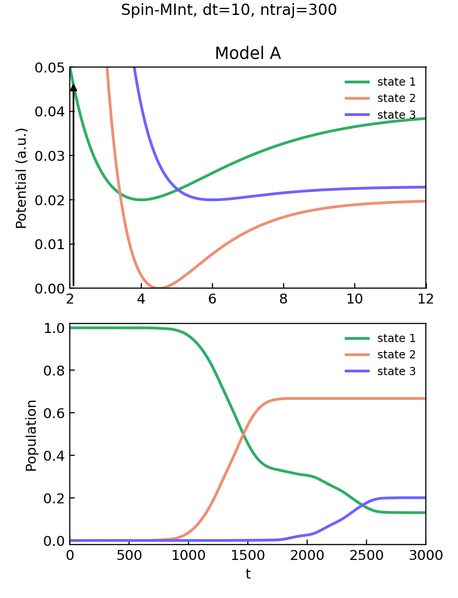

Mapping Dynamics
Spin-MInt Three-State Morse Reproduction
This note records a local implementation pass for generalized spin mapping and a non-RPMD Spin-MInt reproduction on the three-state Morse model of Cook, Rampton, and Hele. The goal was not only to run a benchmark, but also to put the code into a method-family shape: a shared spin-mapping base class, generalized spin mapping as one child, direct Spin-MInt propagation as another child, and MASH as a two-state spin-mapping child method rather than a separate conceptual island.
Background
The preceding spin-mapping note introduced the \(SU(N)\) geometry behind finite electronic mapping. MMST mapping embeds the \(N\)-state electronic space into \(N\) fictitious harmonic oscillators. Spin mapping instead starts from the finite electronic algebra itself. The working variables may still look like Cartesian mapping coordinates, but their radius and zero-point parameter are fixed by the Stratonovich-Weyl construction rather than chosen as a loose oscillator convention.
For implementation, this distinction suggests a simple class hierarchy. The common parent owns \(SU(N)\) generators, Stratonovich-Weyl parameters, mapping-variable initialization, density reconstruction, and population estimators. Concrete methods then differ mainly in how they propagate the electronic and nuclear variables.
Method Family
| Class | Role | Electronic geometry |
|---|---|---|
SpinMappingBase |
Shared parent for SU(N) basis generation, focused/full-sphere sampling, density maps, and population estimators. | General \(SU(N)\) |
GeneralizedSpinMapping |
Runeson-Richardson style mapping in Cartesian electronic variables. | General \(SU(N)\) |
SpinMInt |
Direct Spin-MInt propagation for one-dimensional diabatic models. | General \(SU(N)\) |
MASH |
Two-state mapping approach to surface hopping, implemented as a spin-mapping child. | \(SU(2)\) |
The important design point is that MASH is a specialized member of the spin/SU(N) mapping family. It uses the Bloch-sphere two-state limit and a hemisphere-based active state, while generalized spin mapping and Spin-MInt use the broader \(SU(N)\) construction.
SU(N) Variables
Let \(\hat S_i\), \(i=1,\ldots,N^2-1\), be generalized Gell-Mann generators normalized by
A diabatic potential matrix is decomposed as
The local implementation initializes Cartesian mapping variables \(X_n,P_n\) and forms
The spin vector is the generator expansion of this mapped density,
For the W-representation, the zero-point parameter is fixed by
For the three-state benchmark, \(N=3\), so \(\gamma_W=2/3\) and the mapping radius satisfies \(R_W^2=N\gamma_W+2=4\).
Spin-MInt Step
The direct Spin-MInt update used here is written in terms of the \(SU(N)\) adjoint flow. For a fixed nuclear position \(R\), the electronic spin evolves according to
The one-step update is a kick-drift-like symplectic split:
- Half-step the nuclear coordinate: \(R\leftarrow R+\Delta t\,P/(2M)\).
- At the midpoint, propagate \(\Omega\) exactly under the linear adjoint generator \(A\).
- Update the nuclear momentum using the trace force and the integrated spin force, \(-\partial_R V_0-\frac{1}{2}\partial_R V_i\,\Omega_i\).
- Half-step the coordinate again.
This is the part that makes Spin-MInt attractive for generalized spin mapping: the electronic propagation is a matrix exponential in the adjoint representation, while the nuclear force is evaluated from the same \(SU(N)\) decomposition.
Three-State Morse Setup
The non-RPMD reproduction uses the three-state Morse model from the Spin-MInt paper and its supplementary information. The diabatic surfaces are
with Gaussian off-diagonal couplings
For Model A, the initial nuclear Wigner distribution is
with \(R_0=2.1\), \(P_0=0\), \(M=20000\), and \(\omega=0.005\). Focused electronic sampling on state 1 follows the action-angle form
where \(J_1=1\), \(J_{n\ne1}=0\), and each \(\theta_n\) is uniform on \([0,2\pi]\).
Reproduction Result
The local run shown below used Model A with \(\Delta t=10\), \(t_\mathrm{max}=3000\), and 300 trajectories. The reference supplementary figure uses the same timestep but 10000 trajectories, so this is a compact implementation check rather than a fully converged production reproduction.

The qualitative structure matches the published benchmark: population remains on state 1 until the wavepacket reaches the first coupling region, state 2 becomes dominant, and state 3 turns on later. The published curves are smoother because they average over many more trajectories. A local side-by-side comparison against the paper and supplementary figure was generated during the working session, but only the locally generated numerical figure is published here.
Checks
Two numerical checks were used before treating the reproduction as publishable. First, a two-state Spin-MInt diagnostic conserved the mapped spin norm to roughly machine precision and showed second-order energy-drift reduction as the timestep was decreased. Second, the mapping limit tests and the RP-MASH regression test passed after adding the generalized spin-mapping code:
pytest tests/limits/test_spin_mapping_limits.py tests/limits/test_mmst_limits.py tests/test_rp_mash.py -q
14 passed in 0.75sThe three-state run also stores the time-dependent population table used for the plotted curves.
Code and Data
- reproduce_spin_mint_three_state_morse.py is the driver for the three-state Morse reproduction. It is designed to run from the local
toymodelrepository root, where thetoymodel.methods.SpinMIntandtoymodel.model.ThreeStateMorseimplementations are available. - spin-mint-tsm-model-a-dt10-ntraj300-populations.csv stores the ensemble-averaged populations and standard errors used in the figure.
- su_n_spin_mapping_checks.py is the algebra diagnostic used in the preceding spin-mapping foundations note.
References
- L. E. Cook, J. R. Rampton, and T. J. H. Hele, "The Spin-MInt algorithm: An accurate and symplectic propagator for the spin-mapping representation of nonadiabatic dynamics," Journal of Chemical Physics 164, 144112 (2026).
- J. E. Runeson and J. O. Richardson, "Generalized spin mapping for quantum-classical dynamics," Journal of Chemical Physics 152, 084110 (2020).
- J. E. Runeson and J. O. Richardson, "Spin-mapping approach for nonadiabatic molecular dynamics," Journal of Chemical Physics 151, 044119 (2019).